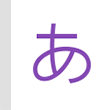

<div class="ft" role="contentinfo">
    <p class="u_ftlkw">
        <a href="#" class="u_ftlk">로그인</a>
        <a href="#" class="u_ftlk">PC버전</a>
        <a href="#" class="u_ftlk">전체 앱</a>
        <a href="#" class="u_ftlk u_ftlkbt"><span>전체서비스</span></a>
    </p>
</div>
<p class="u_cr">
    <span class="u_cri"><a href="#" class="u_cra u_cra_v1">도움말</a></span>
    <span class="u_cri"><a href="#" class="u_cra">문의 및 신고</a></span>
    <span class="u_cri u_cri_v1">&copy;<a href="#" class="u_cra u_cra_v1">NAVER Corp.</a></span>
</p>

<!-- Android home shortcut banner -->
<div class="shortcut">
	<a href="" class="shortcut_click">
		
		<span class="shortcut_text">네이버앱의</span><br>
		<span class="shortcut_text2"><em class="shortcut_text2_color">일본어사전</em> 홈 화면에 바로가기 추가</span>
		<span class="shortcut_ico2"></span>
	</a>
</div>
<!-- //Android home shortcut banner -->

<!-- iOS home shortcut layer -->
<div class="layer_shortcut">
	<div class="inner">
		<p class="layer_shortcut_row">
			<em class="text_color">일본어사전</em>을 빠르고 간편하게<br>
			이용하려면, <span class="ico_arrowup">공유</span>버튼을 눌러<br>
			<em class="text_color">홈 화면에 추가하세요.</em>
		</p>
		<a href="" class="layer_shortcut_close" role="button"><span class="ico_x">레이어창 닫기</span></a>
		<span class="layer_shortcut_arrow"></span>
	</div>
</div>
<!-- //iOS home shortcut layer -->

<!-- //footer -->
<script type="text/javascript" src="http://ajax.googleapis.com/ajax/libs/jquery/1.11.1/jquery.min.js"></script>
<script type="text/javascript" src="http://code.jquery.com/ui/1.11.4/jquery-ui.js"></script>
<script type="text/javascript" async ntemplate src="http://egjs.navercorp.com/ntemplate/dist/common/script/common.js"></script>
<!-- https://github.com/cubiq/iscroll 에서 https://github.com/cubiq/iscroll/releases/tag/v5.2.0 버전의 lite버전을 아래와 같이 삽입한다.-->
<script type="text/javascript" src="http://egjs.navercorp.com/ntemplate/bower_components/egscroll/build/iscroll-lite.js"></script>
<script type="text/javascript" src="http://view.ui.naver.com/dict/m.common/feature_onenaver/js/common_menu_template_v2.js"></script>
<script type="text/javascript" src="js/markup.js"></script>
<script>
	var sideTemplate = new SideTemplate("jp");
	sideTemplate.init();

	$(window).scroll(function() {
		var nScrollTop = $(this).scrollTop();

		if(nScrollTop > 41){
			$('.header').addClass('is_fixed');
			$('body').css("padding-top","42px");
		}else{
			$('.header').removeClass('is_fixed');
			$('body').css("padding-top","0");
		}
	});

	$(".Ngnb_tooltip .Nbtn_close").click(function(){
		$(".Ngnb_tooltip").hide();
	});
</script>
</body>
</html>
